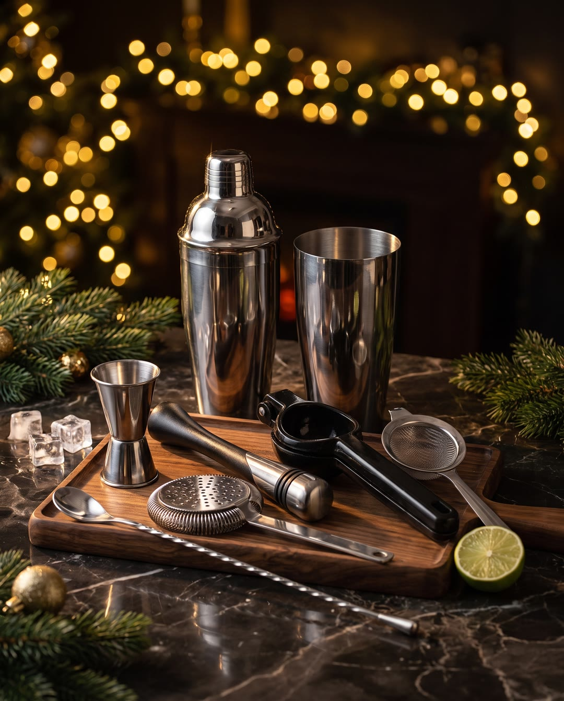

Барный набор
Домашнему бару хватит пяти-шести простых инструментов. С ними коктейль отмеряется точно, взбивается быстро и наливается в бокал без косточек, льда и листьев. Ниже — что это за инструменты и как ими пользоваться.
Как готовить
Джиггер
Отмерять ингредиенты джиггером: внутри него нанесены деления, у двух чаш разный объём (у шефа большая сторона — до 50 мл, малая — до 30 мл).
Мадлер
Мадлером давить ингредиенты прямо в бокале, чтобы они отдали сок и аромат.
Сквизер
Положить половинку цитруса в сквизер срезом вниз, закрыть и надавить — сок стечёт в бокал.
Классический шейкер
У классического шейкера в крышку встроено сито: закрыть, взбить и наливать прямо через крышку.
Стрейнер и бостон
Бостон-шейкер накрывается стаканом и сита не имеет. Чтобы процедить коктейль, накрыть шейкер стрейнером и аккуратно слить напиток в бокал.
Шейкер в сборе
Собрать классический шейкер: стакан, крышка с ситом и колпачок сверху.
Секреты шефа
Если вы положите наоборот, то при закрытии весь сок полетит вам в глаза.
Поэтому можно не заморачиваться.
Для того, чтобы быстро и удобно отмерять ингредиенты.